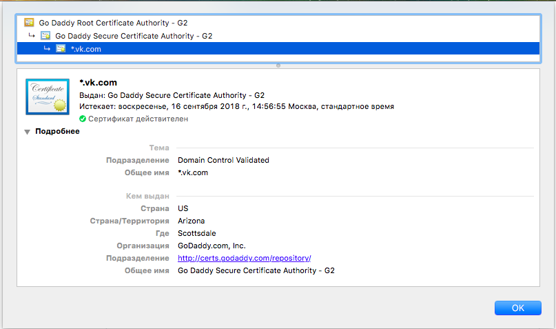

Введение в криптографию и шифрование. Часть вторая
Введение
Что такое шифрование без распределения ключей? Эти понятия неотделимы. В современном мире криптографии вопросу распределения ключей уделяется особое внимание, ведь злоумышленники не дремлют. Во второй части нашего ликбеза по криптографии мы доступно объясним, как работает симметричное и асимметричное шифрование, как выбрать криптостойкий ключ, зачем и как происходит распределение, а также что такое удостоверяющие центры и инфраструктура открытых ключей.
Термины:
- Сессионный (сеансовый) ключ — применяется для одного сеанса связи. Уничтожается в короткий промежуток времени (oт нескольких секунд до одного дня). Сеансовый ключ обeспечивает секретность одного диалога: если он попадет под угрозу, будет нарушена конфиденциальность одного сеанса, но не всей системы в целом.
- Долговременный ключ — используется в течение долгого периода времени (от нескольких часов до нескольких лет, в зависимости от назначения). Его компрометация ставит под угрозу всю систему и является большой проблемой.
- Открытый ключ — применяется для расшифровки в асимметричных криптосистемах шифрования (то есть системах, где для шифрования и расшифровки требуются разные ключи).
- Секретный ключ — используется криптографическим алгоритмом при шифровании/расшифровке сообщений и постановке цифровой подписи.
- Распределение ключей — последовательность действий по выработке участниками общих ключей для осуществления криптографических операций.
Почему распределение ключей так важно?
В нашем арсенале уже имеется несколько алгоритмов шифрования. Как и говорилось ранее, даже самые стойкие и продуманные шифры могут стать уязвимыми, если неправильно выбрать ключ шифрования или позволить украсть его злоумышленнику. Поэтому, чтобы шифрование действительно оправдало ожидания и обеспечило секретность сообщения, нужно правильно выбрать и заранее обговорить секретный ключ.
Чтобы лучше понять симметричное и асимметричное шифрование, давай представим следующую ситуацию. Ты хочешь отправить секретное сообщение с личными данными в банк. Для этого банк выдает тебе коробку и ключ. Ты кладешь письмо в коробку и закрываешь ее на ключ, банк при получении открывает эту коробку с помощью аналогичного ключа. Такой метод является симметричным, так как обе стороны используют один и тот же ключ расшифровывания.
[ad name=»Responbl»]
Однако злоумышленник может перехватить ключ и открыть коробку. Чтобы это предотвратить, банк поступает хитрее: он предоставляет тебе коробку и навесной замок, а единственный ключ банк хранит у себя. Таким образом, воспользоваться замком может кто угодно, но открыть коробку может только обладатель ключа. Такой подход называетcя асимметричным: замок играет роль открытого (публичного) ключа, а ключ банка — секретного (приватного).
Симметричное шифрование предусматривает шифрование и расшифровывание с помощью одного и того же секретного ключа, поэтому пользователям важно правильно выработать совместный ключ, а также безопасно его передать. В условиях незащищенного канала это сделать очень сложно. Асимметричное шифрование как раз решает эту проблему: операции шифрования и расшифрования осуществляются с помощью разных ключей (открытого и секретного). В этом случае обладателю пары ключей необходимо передать собеседнику только открытый ключ, единственного назначение которого — необратимо зашифровать информацию, расшифровать которую сможет только получатель с помощью приватного ключа.
Выбор криптостойкого ключа
Стоит сразу раскрыть главный критерий стойкого ключа в симметричном шифровании: он должен быть случайным. Например, стойкость симметричного шифра Вернама напрямую зависит от выбора ключа. Чем меньше связь между символами ключа, чем больше его длина, тем выше его криптостойкость. В идеале ключ представляет собой абсолютно случайную последовательность с длиной не меньшей, чем у шифруемого текста. Такая длина необходима для того, чтобы исключить возможность брутфорса. К примеру, пин-коды банковских карт (состоящие всего из 4 цифр) от такой атаки защищает только ограничение банка на количество попыток ввода пароля; убери это ограничение, и подбор любого пин-кода займет не более пары часов.
Атаки по шифротексту
Случайная последовательность поможет защитить и от атаки по шифротексту. Суть такой атаки заключается в том, что злоумышленник перехватывает необходимое количество шифротекстов и анализирует их с целью подобрать секретный ключ. Пример — атака на шифр Вернама в предыдущей статье цикла.
Если ты уверен, что твой ключ абсолютно случаен и подобная ситуация тебе нипочем не страшна, рекомендую проверить его на соответствие требованиям стандарта NIST. Если ключ не случайный, опытный криптоаналитик сможет распознать алгоритм шифрования и, возможно, даже получить ключ. А уж если ему в руки попадут еще и открытые тексты — пиши пропало.
В современных системах, чтобы сгенерировать случайную последовательность для ключа, применяют различные подходы. Стандартные UNIX утилиты random и urandom хэшируют данные, снимаемые со счетчика тактов процессора во время аппаратных прерываний. Microsoft Crypto API берет хэш от внутреннего состояния компьютера — текущего времени, размера жесткого диска, размера свободной памяти, номера процесса и так далее. В ход также идут всевозможные случайные данные. Например, в процессе оцифровки звукового сигнала на линейный вход звуковой карты приходит аналоговый электрический сигнал, который содержит шум, состоящий из:
- радиопомех и наводок от соседних устройств и радиоэфира;
- помех электропитания;
- теплового шума случайного движения электронов в компонентах электрической схемы.
Используется и квантовый шум, который носит истинно случайный характер. Квантовый шум «проникает» в цифровую часть звуковой карты, где его можно сразу и использовать. Также нередко прибегают к помощи пользователя, требуя набирать случайные символы на клавиатуре, двигать мышкой, пока идет генерация сигнала, или произносить определенные слова.
Теперь немного о времени жизни ключа. Для нас этот показатель очень важен — ведь чем дольше ключ находится в обращении, тем легче злоумышленнику его получить и тем большую ценность этот ключ для него представляет. С самого момента генерации секретного ключа нужно задуматься, как часто его нужно менять. Кроме того, важный момент — уничтожение секретного ключа. Если речь идет о сессионном ключе, его стоит безвозвратно уничтожить сразу по окончании сеанса связи. Если речь о долговременном — пусть живет указанный срок, но, опять же, ни секундой дольше.
Сессионные ключи, несмотря на их недолгий срок службы, играют важную роль. Они используются повсеместно, начиная от защищенной TLS сессии и заканчивая прикладными программами (например, мессенджерами). Также сессионные ключи применяются при входе в личный кабинет интернет-банка и иных подобных сервисах, где речь идет об особо важных данных и ключи важно менять как можно чаще.
Распределение ключей (надежный обмен ключами)
Другой важной задачей симметричной криптографии помимо выбора суперстойкого ключа является распределение ключей — надежный и защищенный от перехвата способ обмена ключами.
При симметричном шифровании и выработке совместного ключа со своим товарищем сложные схемы ни к чему — можно использовать простой алгоритм Диффи-Хеллмана:
- Я и мой товарищ знаем два абсолютно несекретных числа g и p. Я придумываю большое число a, а мой товарищ большое число b.
- Я вычисляю A = g^a mod p и отправляю товарищу.
- Товарищ вычисляет B = g^b mod p и отправляет мне.
- Я вычисляю B’ = B^a mod p = g^(ab) mod p.
- Товарищ вычисляет A’ = A^b mod p = g^(ab) mod p.
В итоге, A’ = B’ и есть согласованный ключ.
Рассмотрим пример на небольших числах. Пусть g = 2, p = 100, мое число a = 4, а число товарища b = 2:
A = 2^4 mod 100 = 16
B = 2^2 mod 100 = 4
A’ = B^a =4^4 mod 100 = 56
B’ = A^b = 16^2 mod 100 = 56
Если использовать достаточно большие числа a, b и p, шансов получить ключ у злоумышленника будет очень мало.
Протокол Диффи-Хеллмана в чистом виде сейчас, разумеется, нигде не используется. Однако многие протоколы аутентификации построены на его основе: модификации обмена ключами Диффи-Хеллмана можно встретить и в сетевых протоколах, таких как IPSec и TLS, и в отдельных криптографических приложениях.
А как передать ключ?
На первый взгляд, очевидно, физическим способом — нанять курьера и приставить к нему охрану. Или, например, отправить по почте России письмом первого класса. Послать сову, в конце концов. Вариантов много. Однако, если у вас не один друг или не один пользователь криптографической системы, такой метод невыгоден и неудобен. А уж если кто-то из них живет, например, в Австралии, ждать ему придется довольно долго. В масштабах современного мира такой вариант все еще возможен, но абсолютно неудобен. Криптографы долго думали, как избавиться от курьера, и решили, что неплохо было бы разработать специальные протоколы для распределения ключей.
[ad name=»Responbl»]
Для знакомства с протоколами распределения ключей представим, что некой криптографической системой пользуются несколько участников. Они договорились о том, как должен выглядеть ключ шифрования, и каждый генерирует его для себя особым методом. Но тут один пользователь сказал другому (по секрету), что в системе есть нечестный участник. Каждый пользователь начал подозревать своих товарищей… и в результате ключами больше никто не обменивается.
Для решения этой проблемы — общения в условиях недоверенности — большинство протоколов распределения ключей предусматривает наличие «центра доверия». Обычно это некий центральный сервер, которому доверяют все пользователи, используя его для получения ключей и обмена ими между собой при необходимости. Конечно, если есть возможность обменяться ключами напрямую по абсолютно доверенному протоколу, будучи уверенным, что ключ принадлежит именно твоему собеднику, можно обойтись и без УЦ. В реальной жизни такие ситуации, к сожалению, почти не встречаются.
Далее в тексте мы будем рассматривать только протоколы, в которых участники сообщаются единым центром доверия.
Инфраструктура открытых ключей (PKI)
Приступим к основной проблеме в асимметричном шифровании — как узнать наверняка, кому принадлежит открытый ключ. Решением этой задачи является инфраструктура открытых ключей, с которой мы сейчас и разберемся.
Что же это за инфраструктура такая? PKI (Public Key Infrastructure) — это современная система управления криптографической защитой, в том числе и в среде, которая кишит злоумышленниками (например, в интернете). Инфраструктура открытых ключей оперирует понятием «сертификата», который содержит открытый ключ пользователя и идентифицирующую этого пользователя информацию. Задачей PKI является определение политики выпуска электронных сертификатов: их выдача, аннулирование и хранение информации, необходимой для последующей проверки правильности сертификатов. В число приложений, поддерживающих PKI, входят: защищенная электронная почта, протоколы платежей, электронные чеки, электронный обмен информацией, защита данных в сетях с протоколом IP, электронные формы и документы с электронной цифровой подписью. Одним словом, куда в интернете не глянь — наткнешься на PKI.
[ad name=»Responbl»]
Ты приходишь в доверенный центр и получаешь сертификат (иначе говоря, открытый ключ), который можешь использовать по назначению. Далее ты отправляешь этот сертификат своим товарищам, чтобы они могли подтвердить твою личность. В этом сертификате указывается время получения, время истечения сертификата и информация о владельце. Подразумевается, что сертификат ты будешь предъявлять до тех пор, пока не истечет указанный срок.
Ты приходишь в доверенный центр и получаешь сертификат (иначе говоря, открытый ключ), который можешь использовать по назначению. Далее ты отправляешь этот сертификат своим товарищам, чтобы они могли подтвердить твою личность. В этом сертификате указывается время получения, время истечения сертификата и информация о владельце. Подразумевается, что сертификат ты будешь предъявлять до тех пор, пока не истечет указанный срок.
При любом подключении к сайту по https наш браузер проверяет сертификат, смотрит на время истечения и только тогда разрешает защищенное соединение.
Пройти тест по данному курсу